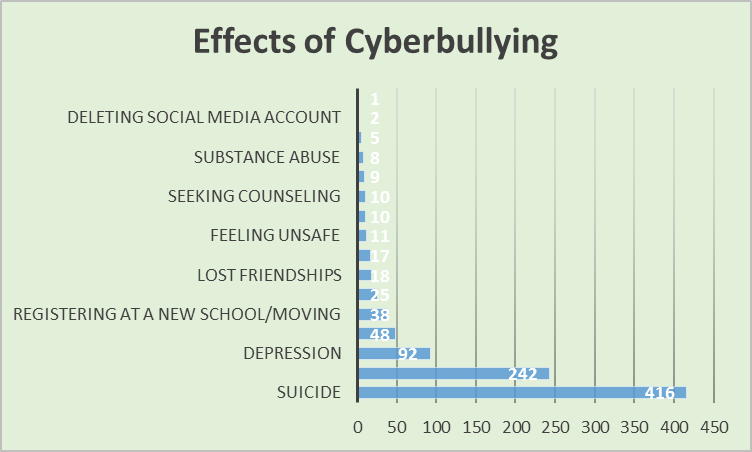

Effects
Research has demonstrated a number of serious consequences of cyberbullying victimization. Victims
may have lower self-esteem, increased suicidal ideation, and a variety of emotional responses,
including being scared, frustrated, angry, and depressed. Cyberbullying may be more harmful than
traditional bullying, because there is no escaping it. One of the most damaging effects is that a
victim begins to avoid friends and activities, which is often the very intention of the bully.
Have a look at the two most dangerous effects cause by cyberbullying on a person.
Intimidation, emotional damage, suicide
According to the Cyberbullying Research Center, "there have been several high profile cases involving teenagers taking their own
lives in part because of being harassed and mistreated over the Internet, a phenomenon we have termed cyberbullicide suicide
indirectly or directly influenced by experiences with online aggression." Cyberbullying is an intense form of psychological abuse,
whose victims are more than twice as likely to suffer from mental disorders compared to traditional bullying. The reluctance youth
have in telling an authority figure about instances of cyberbullying has led to fatal outcomes. At least three children between the
ages of 12 and 13 have committed suicide due to depression brought on by cyberbullying.
On youth and teenagers
The effects of cyberbullying vary, but research illustrates that cyberbullying adversely affects youth to a higher degree than
adolescents and adults. Youth are more likely to suffer since they are still growing mentally and physically. Most of the time
cyberbullying goes unnoticed; the younger generation hides their bullying from anyone that can help to prevent the bullying from
occurring and from getting worse. Between 20% and 40% of adolescents are victims of cyberbullying worldwide. The youth slowly change
their behaviors and actions so they become more withdrawn and quiet, but this may go unnoticed since the change is subtle. If preventive
actions are not taken against cyberbullying, younger children in addition to teenagers will feel more lonely and depressed along with
having significant changes in their eating and sleeping patterns as well as loss of interest in their normal activities. These changes
will affect their growth and development into adulthood. Younger children and teenagers are 76.2% less likely to display suicidal behaviors
and thoughts, but are still at risk depending on other factors such as mental health status, home care, and relationships with others. The
risk of suicide increases by 35% to 45% when victims do not have any support from anyone in their life, and cyberbullying amplifies the
situation.
Below is a small statistics of cyberbullying effects on people
